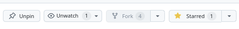
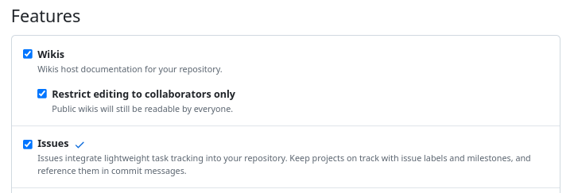
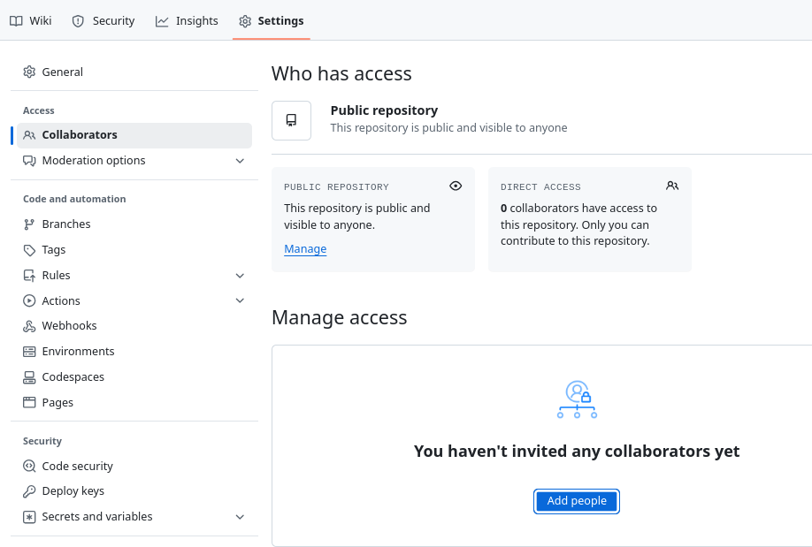

Introduction
Technical setup
- Install Visual Studio Code from here
- Install folowing extensions in Visual Studio Code:
- Github Repositories (GitHub, Inc.)
- GitHub Copilot (GitHub Copilot)
- GitHub Actions (GitHub, Inc.)
- Python (Microsoft)
Useful links
How to use this repository
Below are the steps you need to follow:
- Create a GitHub account if you don’t have one.
- Fork this repository to your account.
 - Enable the Issues tab:
- Go to the
Settingstab and check the Issues option.

- Go to the
- Add your professor as a collaborator:
- Go to the
Settingstab and add their GitHub username in the Collaborators section.

- Go to the
- Install python: Download
Source Code & WWW
Where can I find the problems?
Please visit the Mathematics Physics Lectures website.